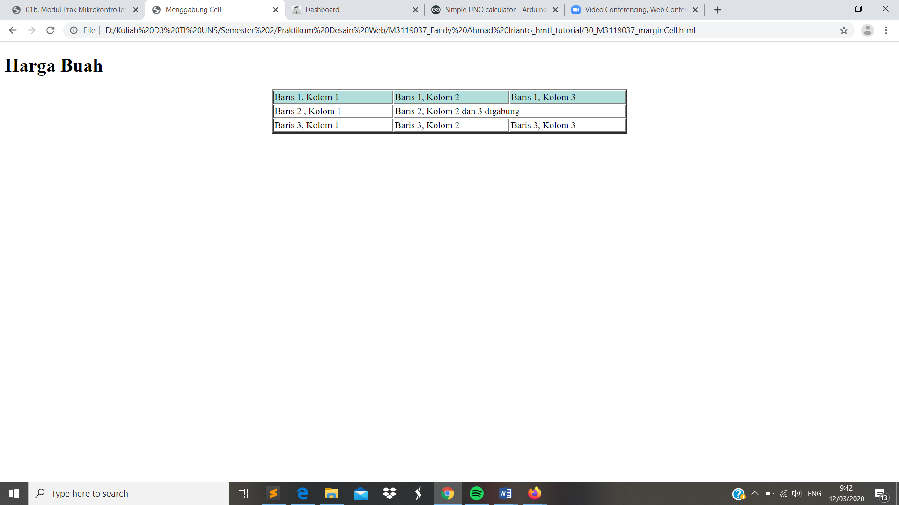

Valign
// Atribut Valign dan Align merupakan format sel yang digunakan untuk mengatur posisi data pada cell. Valign digunakan untuk posisi vertikal data relatif terhada[ sel, sedangan align digunakan pada posisi horizontal. Untuk perintah yang digunakan yakni tag <th>, <td>,atau <td>. Selain itu juga menggunakan atribut top untuk membuat isi sel rata atas dengan sel.
Codingan
<!DOCTYPE html>
<html>
<head>
<meta charset="UTF-8">
<title> Membuat valign</title>
</head>
<body>
<h1>Harga Buah </h1>
<table border="2" align="center" width="40%">
<tr>
<td rowspan="3" valign="top"> Ini adalah Tabel</td>
<td>Hypertext Markup Languange</td>
</tr>
<tr>
<td align="right">HTML</td>
</tr>
<tr>
<td> Perintah dan tahapan web dasar</td>
</tr>
</table>
</body>
</html>
Tampilan Hasil Percobaan

Kesimpulan
Pada percobaan membuat valign & align ini dapat kita simpulkan bahwa kita dapat mengatur tata letak data didalam tabel menggunakan valign (vertikal) dan align (horizontal).